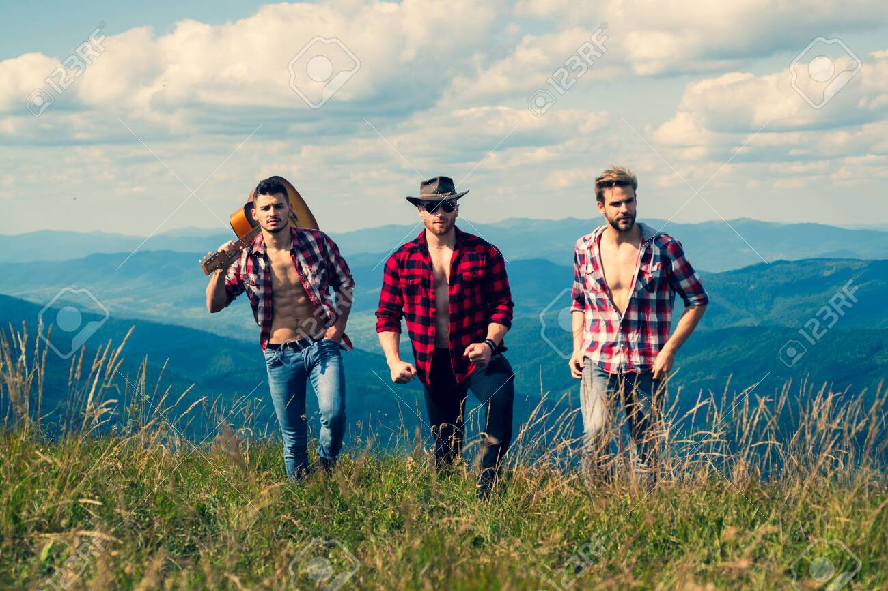

Welcome to My Themed Website
Welcome to our themed website! We are passionate about exploring and sharing the hidden gems and unique destinations around the world. Our mission is to inspire and guide you in discovering new places, cultures, and experiences.
Our Story
Our journey began with a simple love for travel and adventure. Over the years, we have explored countless destinations, each with its own story and charm. We created this website to share our experiences and to help fellow travelers make the most out of their adventures.
Our Mission
We aim to provide insightful travel guides, tips, and recommendations to make your trips more enjoyable and memorable. From bustling cities to tranquil islands, we cover a wide range of destinations to cater to different travel interests and preferences.
Meet the Team
Our team is composed of travel enthusiasts, writers, and photographers who are dedicated to bringing you high-quality content. Each member brings a unique perspective and expertise, ensuring that our guides are comprehensive and engaging.
John Doe - Founder & Lead Writer
John is an avid traveler with over 15 years of experience exploring various destinations. His passion for storytelling and adventure led to the creation of this website.
Jane Smith - Photographer & Content Creator
Jane's eye for detail and love for photography bring our travel stories to life. Her stunning visuals capture the essence of each destination we feature.
Mike Johnson - Travel Guide Expert
Mike's extensive knowledge of travel planning and local insights make our guides practical and valuable for travelers.
Contact Us
We love hearing from our readers! If you have any questions, suggestions, or would like to share your own travel experiences, please don't hesitate to contact us.
Join Our Community
Stay connected with us by following our blog and social media channels. Join our community of travel enthusiasts and never miss an update!